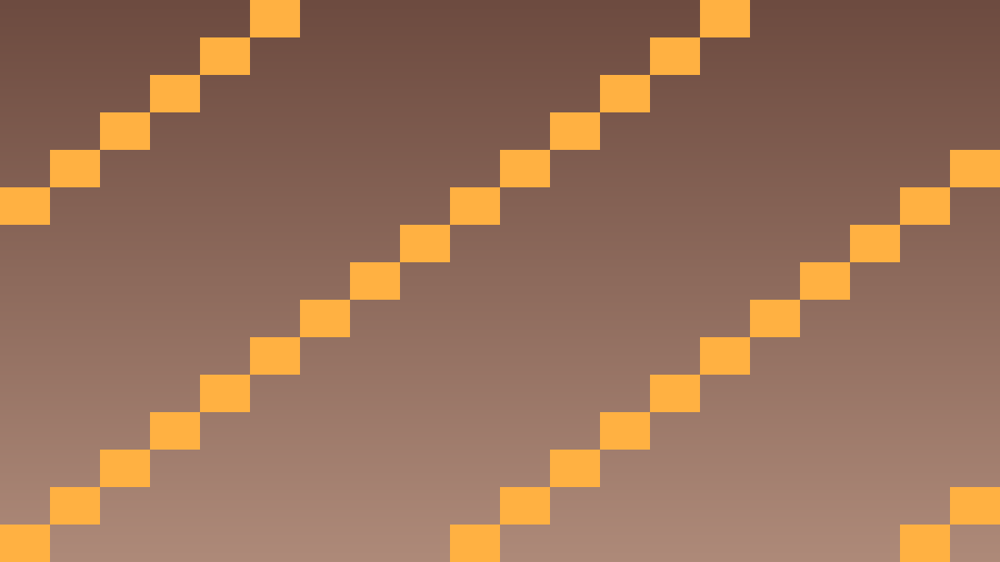

Tavs šīs stundas izaicinājums: Saprast atšķirību starp std::vector un Godot Array, izvēlēties piemēroto datu struktūru.
Godot C++ kontekstā ir divas saraksta opcijas:
| Tips | Lietojums | Piemērs |
|---|---|---|
std::vector<T> | Iekšējais C++ kods, ātrs | std::vector<Enemy*> enemies; |
Array | Komunikācijai ar Godot | Array bullets; |
TypedArray<T> | Tipa-droša Godot Array | TypedArray<Bullet> bullets; |
#include <vector>
std::vector<Enemy*> enemies;
enemies.push_back(new Enemy());
for (auto e : enemies) e->update();
enemies.erase(enemies.begin() + 2); // dzēš 3.
// Godot Array
Array bullets;
bullets.append(new_bullet);
bullets.size();
bullets.pop_back();Pārvaldi vairākus ienaidniekus.
std::vector<Enemy*> enemies.spawn_enemy(): izveido Enemy, pievieno scēnai (add_child), pievieno vektoram._process: ar timeru ik pa 2 sec spawno jaunu ienaidnieku.Apstaigā un noņem mirušos.
e->update().enemies.erase(std::remove_if(...), enemies.end());Salīdzini abas pieejas.
Vector veiktspējas optimizācija.
enemies.reserve(100); pirms cikla — alocē atmiņu, izvairās no relok.enemies.capacity() vs enemies.size().
std::vector<Enemy*> enemies;
void spawn_enemy() {
Enemy* e = memnew(Enemy);
add_child(e);
e->set_position(Vector2(randf_range(0, 1280), 0));
enemies.push_back(e);
}
void Game::_physics_process(double delta) {
spawn_timer += delta;
if (spawn_timer >= 2.0) {
spawn_enemy();
spawn_timer = 0;
}
// Noņem mirušos
enemies.erase(
std::remove_if(enemies.begin(), enemies.end(),
[](Enemy* e) { return !e->is_alive(); }),
enemies.end());
}